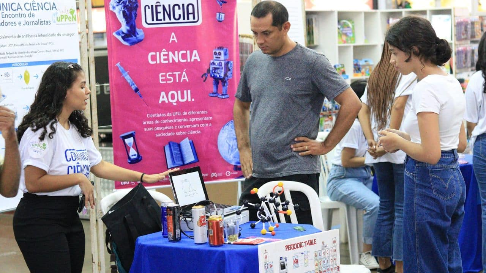

Cidade e sustentabilidade
Parque do Sabiá recebe iluminação inteligente
Uberlândia instala iluminação inteligente no Parque do Sabiá
16 de julho de 2026
O Parque do Sabiá recebeu um novo sistema fictício de iluminação inteligente em suas pistas de caminhada. As lâmpadas de LED possuem sensores que aumentam a intensidade da luz quando identificam movimento no local.
De acordo com a administração do parque, o objetivo é ampliar a segurança dos visitantes no período noturno e reduzir o consumo de energia elétrica.
Veja o site da empresa que modernizou nosso parque
Festival de música reúne artistas locais em Uberlândia
Evento Som da Cidade valoriza músicos e artistas uberlandenses
12 de julho de 2026
A Praça Clarimundo Carneiro recebeu o festival fictício Som da Cidade, com apresentações de bandas, cantores e DJs de Uberlândia. O evento reuniu estilos como sertanejo, rap, rock e música eletrônica.
Além dos shows, o festival contou com uma feira de artesanato, exposição de artistas locais e espaços de alimentação. A iniciativa buscou valorizar a cultura da cidade e oferecer uma opção gratuita de lazer à população.
O fetival foi gravado no canal
Som da Cidadeno youtube.

Tecnologia e educação
Estudantes criam app para ajudar no transporte urbano
Aplicativo BusUdi mostra rotas e horários de ônibus em Uberlândia
15 de julho de 2026
Alunos de uma escola técnica de Uberlândia desenvolveram o BusUdi, um aplicativo fictício que mostra horários estimados, lotação e rotas de ônibus em tempo real.
O projeto também permite que os usuários enviem avisos sobre pontos com problemas, atrasos e mudanças temporárias nas linhas.
Recursos do aplicativo
- Consulta de horários estimados dos ônibus
- Visualização das rotas disponíveis
- Informações sobre a lotação dos veículos
- Avisos sobre atrasos e alterações nas linhas
Feira de tecnologia movimenta o centro da cidade
Expo Inova Uberlândia apresenta projetos criados por estudantes
10 de julho de 2026
A Praça Tubal Vilela sediou a primeira edição fictícia da Expo Inova Uberlândia, uma feira com projetos de robótica, programação, sustentabilidade e empreendedorismo jovem.
Durante o evento, visitantes puderam testar jogos produzidos por estudantes, conhecer protótipos de aplicativos e participar de oficinas gratuitas de criação de sites.
Atividades da feira
- Visitar os estandes de projetos tecnológicos
- Testar jogos desenvolvidos por estudantes
- Participar das oficinas de criação de sites
- Conhecer protótipos de aplicativos e robôs
